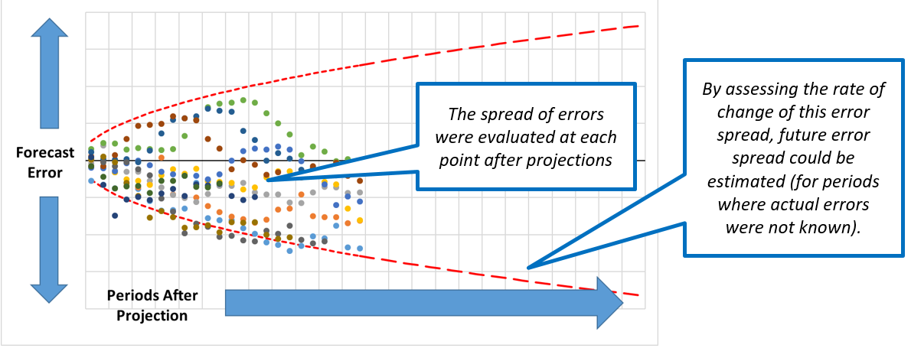
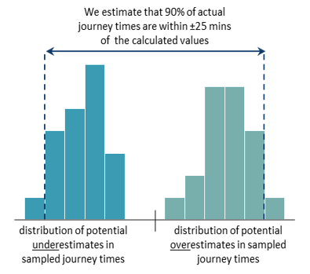
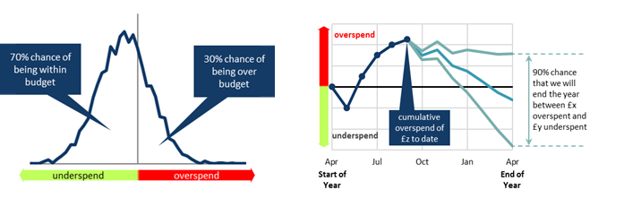

7. Case studies
Estimating the impact of evidence volumes in Legal Aid spend
The situation:
- Increased electronic evidence
- Media focus on collapse of trials due to lack of evidence
- New guidance on the disclosure of data
However, there was no information to determine for how long these increases could continue. In addition, prices had risen particularly quickly in more recent months and may be an indication of an accelerating trend.
The analytical approach:
Asking the right question:
The existing model takes predicted court activity and calculates expected bill volumes, which a price forecast is then applied to.
- What should the price forecast be set at for Crown Court Legal Aid?
- What is the risk of over or underspending against this forecast?
Defining and identifying uncertainty:
- The timing and value of upcoming bills
- Potential changes in underlying cases mix
- Case volumes
Understanding and measuring uncertainty:
- Uncertainty around case volumes was discounted (Dominant Uncertainty) as the impact was expected to be small.
- No information was available to determine the scale of future increases, so scenario analysis was used to assess the impact of certain assumptions.
- The impacts of 3 price scenarios, representing price increases continuing for 3, 6 or 12 months, were estimated.
- Two additional scenarios were considered:
- An increasing level of prices. Due to insufficient evidence to support it being considered for the main estimate, it was logged in the risk register to highlight the potential variance.
- Prices levelling out immediately in case the full impact had already fed through. Due to the volume and timing of identified drivers this was felt to be very unlikely, so including it could be misleading and contribute to an optimism bias to the decision making.

Presenting and communicating uncertainty analysis
- Scenarios were presented taking the 3, 6 or 12 month assumptions for the central projection, with the higher and flat scenarios being logged in the risk register. The communication stressed that there was no information that would allow us to tell which scenario was more likely.
- Decision makers agreed that the range of scenarios considered reflected the range of reasonable outcomes.
- As no information was available on the which scenario was mostly likely, discussion focused on the risks that were associated with taking each scenario through for planning purposes, such as over or underspending against the overall budget.
- Scenario analysis was used to provide a range of values to illustrate the large amounts of uncertainty around the forecast without giving the impression that any particular outcome was more likely, allowing a decision to be made with the understanding of the risks involved.
Estimating uncertainty in prison population projections
The situation:
Prison population projections are the end result of a number of criminal justice system interconnected models. The uncertainty around each of these models had not been estimated, but understanding the uncertainty of prison projections was essential for capacity planning.
The analytical approach:
Asking the right question:
Court demand and sentencing and forecasts were used within a prison population microsimulation model, with policy forecasts overlaid.
- How confident are we that the prison population will not exceed a particular threshold?
- Was there sufficient resource to estimate uncertainty using a traditional bottom-up approach (i.e. combining the uncertainty from all constituent models)?
Defining and identifying uncertainty:
- Court demand projections
- Sentencing assumptions (custody rate)
- Impact estimates of future policy changes
- Unknown impacts such as exogenous system shocks or policy changes not known at time of projection
- Estimation error (such as sampling bias) from simulation model
Understanding and measuring uncertainty:
- A top-down approach was chosen as the resource requirement for a traditional bottom-up approach would have been prohibitive.
- The variance of all the previous forecast errors after 1 time period were fitted to a chosen probability distribution (in this case a normal distribution was chosen). This distribution was used to estimate the uncertainty of the new forecast after 1 time period.
- This process was repeated for the variance at each subsequent time period.
- The rate of change of variance was used to extrapolate the variance for periods where no forecast error existed.

Presenting and communicating uncertainty analysis
- We presented our historical forecast errors, explaining their main drivers and how each contributes to our current uncertainty range. This helped our key customers to better understand the uncertainties inherent in the system we model, and therefore why we can’t produce more precise forecasts.
- The other aspect was helping customers think about how they should use the uncertainty estimates. For example: for the prison estate, assessing the likelihood of prison population reaching different levels together with an assessment of risk appetite and contingency measures we could use. This allowed for an evidence based approach for how much capacity we should plan for, not simply planning to the central estimate.
Estimating changes to staff travel times following an office relocation
The situation:
Alternative government office locations were being considered and their on staff travel times.
The analytical approach:
Asking the right question:
Google maps API was used to estimate journey times from each home address to each potential location.
- 90 minutes was considered to be a ‘reasonable’ travel time.
- The distribution of journey times was an output of interest, but the key focus was “What proportion of staff will have a journey time of over 90 minutes?”
Defining and identifying uncertainty:
- Only first half of staff postcodes were available.
- Not known who could feasibly travel by car.
- Staff begin and end work at 9am and 5pm.
- Journey time assumes all transport is running to schedule.
- Assumptions for transfer times, walking speeds etc.

Understanding and measuring uncertainty:
- Through sensitivity analysis on each parameter, the use of partial postcodes was found to be the most significant source of uncertainty and so Dominant uncertainty was chosen.
- A Monte Carlo approach would have been a more complete analysis but was not viable in the available time.
- A sample of postcode districts were reviewed to calculate: - The journey time from the centre of the postcode; - The shortest possible journey from within that postcode; - The longest possible journey from within that postcode.
- The differences in these times were analysed across the sample to form distributions.
- Producing an uncertainty estimate of 90% of journey times to be within ± 25 minutes of the calculated durations.


Presenting and communicating uncertainty analysis
- A cumulative distribution of journey times along with uncertainty bounds clearly presented how many journey times were estimated to be within the crucial threshold of 90 minutes.
- Bar graph ranges were presented to the senior move managers, to show how journey times compared between location – the central estimate wasn’t plotted to avoid the reader putting too much significance on it.
- Prose sentences were used to clearly present the key results.
- Unquantified uncertainties were communicated e.g. the assumption of no delays.
- The communication of the uncertainty made clear the case for obtaining exact postcodes, allowing the analysis to be repeated with less postcode uncertainty.
Predicting staff pay costs
The situation:
Each department has to manage their pay costs to ensure they stay within their budget, making decisions to recruit (or not) in the face of uncertainty over staff turnover, pay rises, etc.
The analytical approach:
Asking the right question:
Use a microsimulation to model staff members over time, with departures, promotions, and new recruits modelled stochastically.
- Initially ‘What will our pay costs be at the end of the year for a given recruit plan?’
- Redefined as ‘how likely is it that our costs will exceed our budget?’, allowing a risk-based approach to decision-making, and also allowing uncertainty in the budget to be incorporated.
Defining and identifying uncertainty:
- The pay budget including additional sources of funding not known until the start of the year
- Number of staff who will join or leave the department in future months
- Variation in starting salaries, pension etc. for new staffs
- Variation in pay awards based on staff performance

Understanding and measuring uncertainty:
- A Monte Carlo approach was used due to the large number of sources of uncertainty, its suitability in microsimulation, the (assumed) lack of correlation between sources, and availability of time. Given that the model was likely to be reused many times, it was worth investing the time to build a full probabilistic uncertainty assessment into the model.
- Most numerical assumptions in the model (including dates) can be entered as a distribution (exact, uniform, or triangular, along with some bespoke distributions for specific purposes).
- This resulted in a full probability distribution of the range of possible outcomes.

Presenting and communicating uncertainty analysis
- All major uncertainties were quantified, and presented (with any unquantified sources noted elsewhere).
- The key output was simply the likelihood of remaining within budget, using positive and negative framing (e.g. “We have an 70% chance of staying within budget, and a 30% chance of exceeding our budget”)
- As the budget holder was an analyst, we chose to present the full probability density profile to illustrate the range of possible over-/under-spends.
- Alongside, simple prose descriptions of the 90% prediction intervals to describe the likely range of the over-/under-spend
- A further graph was used to show how performance against budget was predicted to evolve over the year, using multiple line graphs to show the 90% prediction intervals.